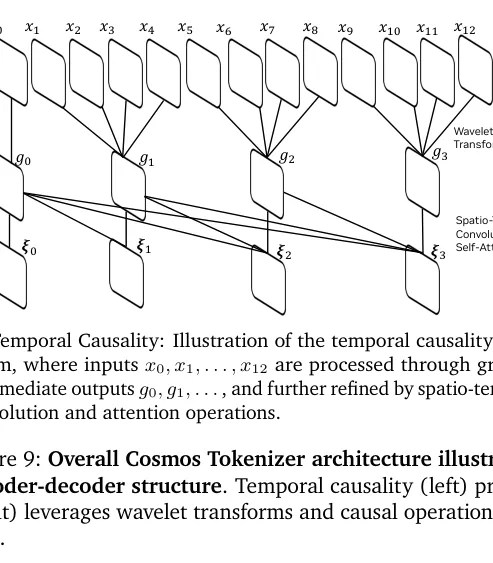
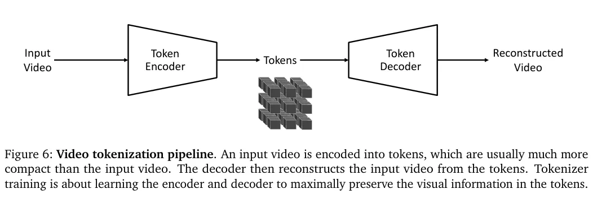
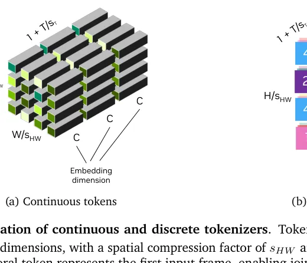

论文 Cosmos WFM Platform for Physical AI（arXiv 2501.03575）§4 + 开源 NVIDIA/Cosmos-Tokenizer（Apache-2.0）源码逐行核对。每个阶段都写清楚 output 的张量形状。
configs.py 的 discrete_video：空间压缩 16×、时间压缩 8×、base channels=128、channels_mult=[2,4,4]、patch_size=4。| 阶段 | 操作 | output 形状 | 通道/压缩 |
|---|---|---|---|
| ① | 输入 | [B, 3, T, H, W] | 3ch |
| ② | Haar ×2 级 | [B, 192, T/4, H/4, W/4] | ×64ch, 时空÷4 |
| ③ | conv_in | [B, 128, T/4, H/4, W/4] | 128ch |
| ④ | 3× Down | [B, 512, T/8, H/16, W/16] | 512ch, 空16×时8× |
| ⑤ | conv_out → z | [B, 16, T/8, H/16, W/16] | z=16ch |
| ⑥a | FSQ → indices | [B, T/8, H/16, W/16] | 整数∈{0..63999} |
| ⑥b | FSQ → z_q | [B, 6, T/8, H/16, W/16] | 6ch(=len levels) |
| ⑦ | Decoder+逆Haar | [B, 3, T, H, W] | 重建 |
指路：编码器 = 因子化（空间/时间分离）因果卷积 + 注意力；前端 Haar 小波；图像视频统一网络；总压缩 256–2048×。连续=AE、离散=FSQ。
# EncoderFactorized 关键结构 (layers3d.py:731)
conv_in = Sequential(
CausalConv3d(in, 128, kernel=(1,3,3)), # 只做空间
CausalConv3d(128,128, kernel=(3,1,1)), # 只做时间(因果) → "factorized"
)
# 下采样次数：空间/时间独立
num_spatial_downs = log2(spatial_compression) - log2(patch_size) # DV:4-2=2
num_temporal_downs = log2(temporal_compression) - log2(patch_size) # DV:3-2=1因果 padding（原文+源码）："causal padding in temporal convolutions such that each token is a function of the current and past inputs but not the future ones" —— 时间维只 pad 过去，不看未来，对齐自驾/机器人的因果性。
| 阶段 | Loss（原文） | 作用 |
|---|---|---|
| Stage 1 打底 | L1 reconstruction | 像素级 input↔recon 距离 |
| implicit-perceptual（VGG-19 特征 L1） | 保语义/结构 | |
| optical-flow loss | 时序平滑，压 flicker | |
| Stage 2 锐化 | Gram-matrix loss（VGG-19 特征） | 风格类，锐化细节 |
| adversarial loss | GAN 逼真细节 | |
| 离散专属 | Straight-Through Estimator (STE) | 让不可导量化能回传梯度 |
课程训练（原文）："Initially, we train on images, followed by videos with progressively longer durations ... progressively increase the spatial resolution" —— 图像 → 短视频 → 长视频、分辨率渐升、图/视频联合。
连续（AE）：z 直接是 16 维连续向量，不量化、全程可导，喂扩散。
离散（FSQ） quantizers.py:143 四步（output 每步标注）：
# FSQ.quantize / codes_to_indices（真实源码，levels=[8,8,8,5,5,5]）
def bound(z): # ① tanh 限幅到格点范围
half=(levels-1)*(1+eps)/2
return (z+shift).tanh()*half - offset # output: 连续、有界
def quantize(z):
q = round_ste(bound(z)) # ② STE 四舍五入到整数格点
return q / (levels//2) # ③ 归一化到[-1,1]; output: zhat
def codes_to_indices(zhat): # ④ 混合进制 → 唯一整数
return (scale_shift(zhat) * _basis).sum(-1) # _basis=cumprod([1]+levels[:-1])
# output: index ∈ {0 .. 8*8*8*5*5*5-1 = 63999}码本大小 = 8·8·8·5·5·5 = 64000；embedding_dim = 6 = len(levels)。为何 FSQ 不用 VQ：FSQ 无可学码本、无 commitment/EMA、天然满码 → 不坍塌。
VQ（对比，源码 quantizers.py:307）——印证"是 argmin 最近邻不是分类器"：
# VectorQuantizer.forward
d = ||z||² + ||e||² - 2·z·eᵀ # 到每个码字的距离
idx = torch.argmin(d, dim=1) # ← argmin 最近邻(无 softmax/分类头)
z_q = matmul(one_hot(idx), embedding.weight) # 查表; output: z_q
z_q = z + (z_q - z).detach() # STEdef round_ste(z):
zhat = z.round()
return z + (zhat - z).detach() # 前向=round, 反向=恒等(梯度直穿)
# output: 前向数值=z.round(); 反向 ∂output/∂z = 1一维手算 [4,6,2,8]：低通(和) [10,10]（4+6, 2+8）；高通(差) [-2,-6]（4−6, 2−8）→ output 低[10,10] + 高[-2,-6]，4 数→4 数，不丢信息只是分粗/细。
二维：先横(W)后竖(H) 各做一次 → 2×2 块出 4 子带 LL/LH/HL/HH（1 缩略图 + 3 方向细节）；三维视频：T/H/W 各一次 → 8 子带。
# patching.py 真实滤波器与卷积
haar = [0.707, 0.707] # 1/√2
hl = haar # 低通=求和
hh = haar * (-1)**[0,1] = [0.707,-0.707] # 高通=求差
xl = conv2d(x, hl, stride=(1,2)) # 沿 W 求和, W÷2
xh = conv2d(x, hh, stride=(1,2)) # 沿 W 求差, W÷2
xll,xlh = conv2d(xl, hl/hh, stride=(2,1)) # 再沿 H, H÷2
xhl,xhh = conv2d(xh, hl/hh, stride=(2,1))
out = cat([xll,xlh,xhl,xhh], dim=1) # output: 4 子带塞通道; RGB[3,H,W]→[12,H/2,W/2]可逆无损：知道 和=a+b、差=a−b 就能解出 a=(和+差)/2, b=(和−差)/2；源码 UnPatcher3D._idwt 用 conv_transpose3d 精确逆回去。与 bilinear 区别：bilinear 丢高频、不可逆；Haar 把高频塞进通道全保留、可逆。该层 requires_grad=False（无参）。
Gram \(G_{ij}=\sum_p F_{ip}F_{jp}\)：对空间位置求和，丢掉"在哪"、只留"什么特征共现" → 纹理/风格统计。两图 Gram 接近=纹理接近（与物体位置无关）。
感知损失 vs 蒸馏（诚实澄清）：特征蒸馏确实存在（不止蒸 logits）。二者形式相通（都在冻结网络特征空间算 L1）；区别在意图：蒸馏=两个不同网络对同一输入对齐特征（迁移能力）；感知损失（本文）=同一冻结 VGG 对"原图 vs 重建图"两个不同输入算距离、优化的是重建图。机制上感知损失就是一种以 VGG 为参照的特征级监督。
重建质量 SOTA（PSNR/SSIM），且比同类快 2–12×——tokenizer 快 = 整条 WFM 训练/推理都省。



NVIDIA/Cosmos-Tokenizer（✅ 带文件行号）+ 论文 §4（📄）。训练损失（VGG/Gram/光流/对抗）与 VGG 具体层 不在开源推理仓、论文亦未细化（⚠️），故只给论文文字描述、未给代码。output 形状按 DV(spatial16×/temporal8×) 配置推导，CV 版为 8×/8×。